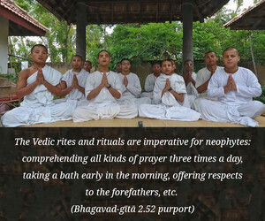

When your intelligence has passed out of the dense forest of delusion, you shall become indifferent to all that has been heard and all that is to be heard.

There are many good examples in the lives of the great devotees of the Lord of those who became indifferent to the rituals of the Vedas simply by devotional service to the Lord. When a person factually understands Kṛṣṇa and his relationship with Kṛṣṇa, he naturally becomes completely indifferent to the rituals of fruitive activities, even though an experienced brāhmaṇa. Śrī Mādhavendra Purī, a great devotee and ācārya in the line of the devotees, says:
sandhyā-vandana bhadram astu bhavato bhoḥ snāna tubhyaṁ namo
bho devāḥ pitaraś ca tarpaṇa-vidhau nāhaṁ kṣamaḥ kṣamyatām
yatra kvāpi niṣadya yādava-kulottaṁsasya kaṁsa-dviṣaḥ
smāraṁ smāram aghaṁ harāmi tad alaṁ manye kim anyena me
“O my prayers three times a day, all glory to you. O bathing, I offer my obeisances unto you. O demigods! O forefathers! Please excuse me for my inability to offer you my respects. Now wherever I sit, I can remember the great descendant of the Yadu dynasty [Kṛṣṇa], the enemy of Kaṁsa, and thereby I can free myself from all sinful bondage. I think this is sufficient for me.”
The Vedic rites and rituals are imperative for neophytes: comprehending all kinds of prayer three times a day, taking a bath early in the morning, offering respects to the forefathers, etc. But when one is fully in Kṛṣṇa consciousness and is engaged in His transcendental loving service, one becomes indifferent to all these regulative principles because he has already attained perfection. If one can reach the platform of understanding by service to the Supreme Lord Kṛṣṇa, he has no longer to execute different types of penances and sacrifices as recommended in revealed scriptures. And, similarly, if one has not understood that the purpose of the Vedas is to reach Kṛṣṇa and simply engages in the rituals, etc., then he is uselessly wasting time in such engagements. Persons in Kṛṣṇa consciousness transcend the limit of śabda-brahma, or the range of the Vedas and Upaniṣads.